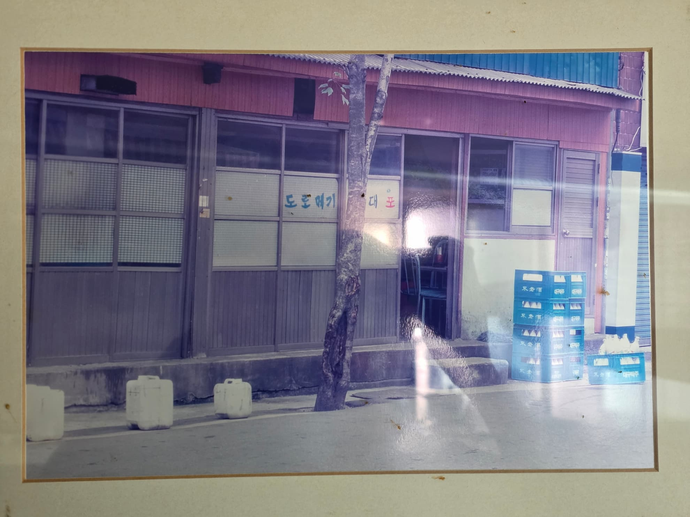
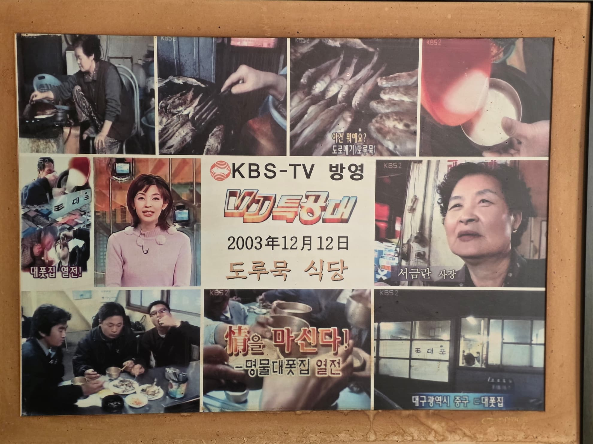
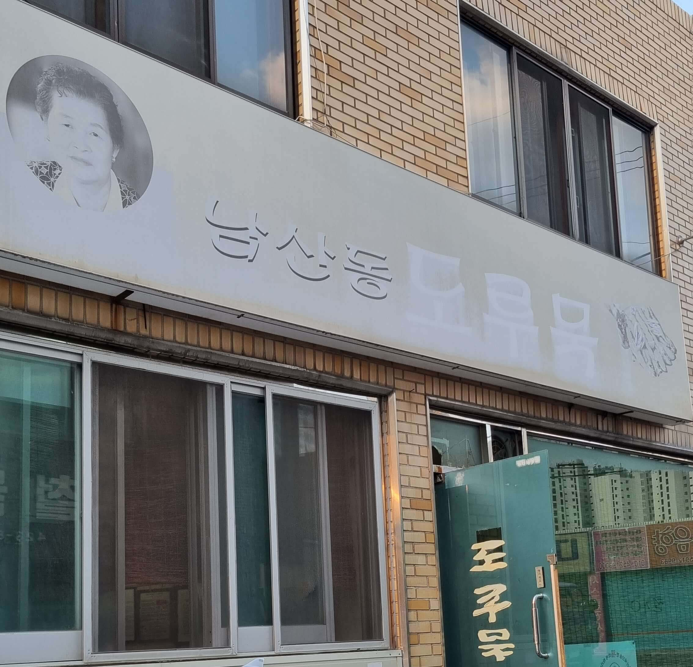

도루묵 소식
현재 도루묵 판매 중입니다.
영업 안내
timer13:00 ~ 21:00
block매달 첫째/셋째 주 일요일 정기 휴무
말짱 도루묵의 유래
피난길의 별미
임진왜란 당시, 피난길에 오른 선조 임금은 먹을 것이 마땅치 않아 고생하고 있었습니다.
이때 한 어부가 이름 없는 생선 한 마리를 바쳤고, 배가 고팠던 선조는 이를 아주 맛있게 먹었습니다.
은어(銀魚)라는 이름
감탄한 선조가 생선의 이름을 묻자 어부는 '묵'이라고 답했습니다.
이름이 너무 볼품없다고 생각한 선조는 "이토록 맛있는 고기의 이름이 어찌 '묵'인가?
이제부터 은어(銀魚)라 불러라"라며 멋진 이름을 하사했습니다.
다시 '묵'으로
전쟁이 끝나고 궁으로 돌아온 선조는 피난길에 먹었던 그 맛을 잊지 못해 다시 '은어'를 올리게 했습니다.
그런데 진수성찬에 입이 길들여진 탓인지, 예전의 그 맛이 나지 않았습니다.
말짱 도루묵
실망한 선조는 "도로 '묵'이라 불러라!"라고 명했습니다.
여기서 '도로 묵'이 합쳐져 도루묵이 되었고, 공들인 이름이 허사가 된 상황을 빗대어 '말짱 도루묵'이라는 표현이 생겨났습니다.
Since 1961
1961도루묵 식당 개업
2003KBS - VJ 특공대 방영
2003년 12월 12일
情을 마신다! - 명품대폿집 열전
2004도루묵 식당 이전
개업부터 약 40년을 지켜오던 자리에서 현재 위치로 이전
2012KBS - VJ 특공대 방영
2012년 11월 23일(641회)